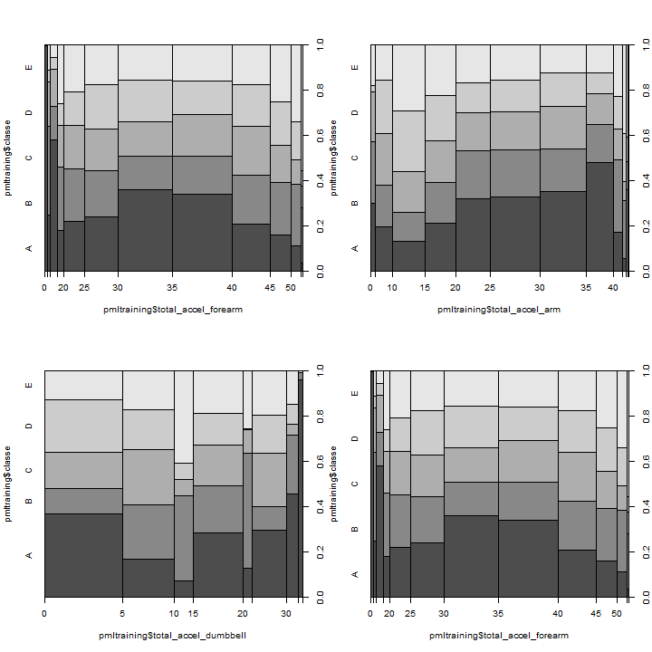

Practical Machine Learning - Repository for Project
The data for this project come from this source: http://groupware.les.inf.puc-rio.br/har. If you use the document you create for this class for any purpose please cite them as they have been very generous in allowing their data to be used for this kind of assignment.
What you should submit
The goal of your project is to predict the manner in which they did the exercise. This is the "classe" variable in the training set. You may use any of the other variables to predict with. You should create a report describing how you built your model, how you used cross validation, what you think the expected out of sample error is, and why you made the choices you did. You will also use your prediction model to predict 20 different test cases.
if(!file.exists("./data")){dir.create("./data")}
fileUrl <- "http://d396qusza40orc.cloudfront.net/predmachlearn/pml-training.csv"
download.file(fileUrl, destfile="./data/pml-training.csv")
fileUrl <- "http://d396qusza40orc.cloudfront.net/predmachlearn/pml-testing.csv"
download.file(fileUrl, destfile="./data/pml-testing.csv")
The directory data in the working spoace is created, if it not exists:
set.seed(975)
pmltraining <- read.table("./data/pml-training.csv", sep = ",", header=T, stringsAsFactors=F)
pmltesting <- read.table("./data/pml-testing.csv", sep = ",", header=T, stringsAsFactors=F)
In order to identify the columns really needed, was used used the documentats from the Human Activity Recognition Project
The strategy chosen is to remove any variable which isn't a value captured by sensors, and so the first 7 columns are deleted:
pmltraining <- pmltraining[,8:ncol(pmltraining)]
pmltesting <- pmltesting[,8:ncol(pmltesting)]
pmltraining <- pmltraining[,colSums(is.na(pmltraining)) == 0]
pmltesting <- pmltesting[,colSums(is.na(pmltesting)) == 0]
ch <- sapply(names(pmltraining), function(x) inherits(pmltraining[,x], c("character")))
ch <- names(which(ch==TRUE))
ch <- ch[!ch == "classe"]
pmltraining <- pmltraining[,-which(names(pmltraining) %in% ch)]
Making classe as factor in order to use it as a outcome variable in the model:
pmltraining$classe <- as.factor(pmltraining$classe)
These are the final variables and the distribution of classe response for three variable explaining total data:
par(mfrow=c(2,2))
plot(pmltraining$classe ~ pmltraining$total_accel_forearm)
plot(pmltraining$classe ~ pmltraining$total_accel_arm)
plot(pmltraining$classe ~ pmltraining$total_accel_dumbbell)
plot(pmltraining$classe ~ pmltraining$total_accel_forearm)

{ figure/unnamed-chunk-7.png }
According to the oob document , this method performs an unbiased estimate internally, so there is no need for cross-validation or a separate test set to get an unbiased estimate.
Anyway, we choose to create the training and test set, in order to renforce the reliable of the result, and demonstrate the application of consepts.
library(caret)
## Loading required package: lattice
## Loading required package: ggplot2
dp <- createDataPartition(y = pmltraining$classe, p=0.2,list=FALSE)
dpdatatest <- pmltraining[dp,]
dpdatatrain <- pmltraining[-dp,]
nrow(dpdatatest); nrow(dpdatatrain)
## [1] 3927
## [1] 15695
modFitrf_train <- train(classe ~ ., data = dpdatatrain, method="rf", trControl = trainControl(method = "oob", number = 4))
## Loading required package: randomForest
## randomForest 4.6-7
## Type rfNews() to see new features/changes/bug fixes.
plot(modFitrf_train$finalModel)
cm <- confusionMatrix(dpdatatest$classe, predict(modFitrf_train, dpdatatest))
cm
## Confusion Matrix and Statistics
##
## Reference
## Prediction A B C D E
## A 1115 1 0 0 0
## B 4 756 0 0 0
## C 0 3 676 6 0
## D 0 0 0 644 0
## E 0 0 0 0 722
##
## Overall Statistics
##
## Accuracy : 0.996
## 95% CI : (0.994, 0.998)
## No Information Rate : 0.285
## P-Value [Acc > NIR] : <2e-16
##
## Kappa : 0.995
## Mcnemar's Test P-Value : NA
##
## Statistics by Class:
##
## Class: A Class: B Class: C Class: D Class: E
## Sensitivity 0.996 0.995 1.000 0.991 1.000
## Specificity 1.000 0.999 0.997 1.000 1.000
## Pos Pred Value 0.999 0.995 0.987 1.000 1.000
## Neg Pred Value 0.999 0.999 1.000 0.998 1.000
## Prevalence 0.285 0.194 0.172 0.166 0.184
## Detection Rate 0.284 0.193 0.172 0.164 0.184
## Detection Prevalence 0.284 0.194 0.174 0.164 0.184
## Balanced Accuracy 0.998 0.997 0.999 0.995 1.000
pr <- postResample(predict(modFitrf_train, dpdatatest), dpdatatest$classe)
pr
## Accuracy Kappa
## 0.9964 0.9955
modFitrf_train$finalModel
##
## Call:
## randomForest(x = x, y = y, mtry = param$mtry)
## Type of random forest: classification
## Number of trees: 500
## No. of variables tried at each split: 27
##
## OOB estimate of error rate: 0.6%
## Confusion matrix:
## A B C D E class.error
## A 4459 3 1 0 1 0.001120
## B 19 3010 8 0 0 0.008890
## C 0 16 2717 4 0 0.007307
## D 0 1 27 2541 3 0.012053
## E 0 1 3 7 2874 0.003813
pred <- predict(modFitrf_train, pmltesting)
pml_write_files = function(x){
n = length(x)
for(i in 1:n){
filename = paste0("problem_id_",i,".txt")
write.table(x[i],file=filename,quote=FALSE,row.names=FALSE,col.names=FALSE)
}
}
pml_write_files(pred)